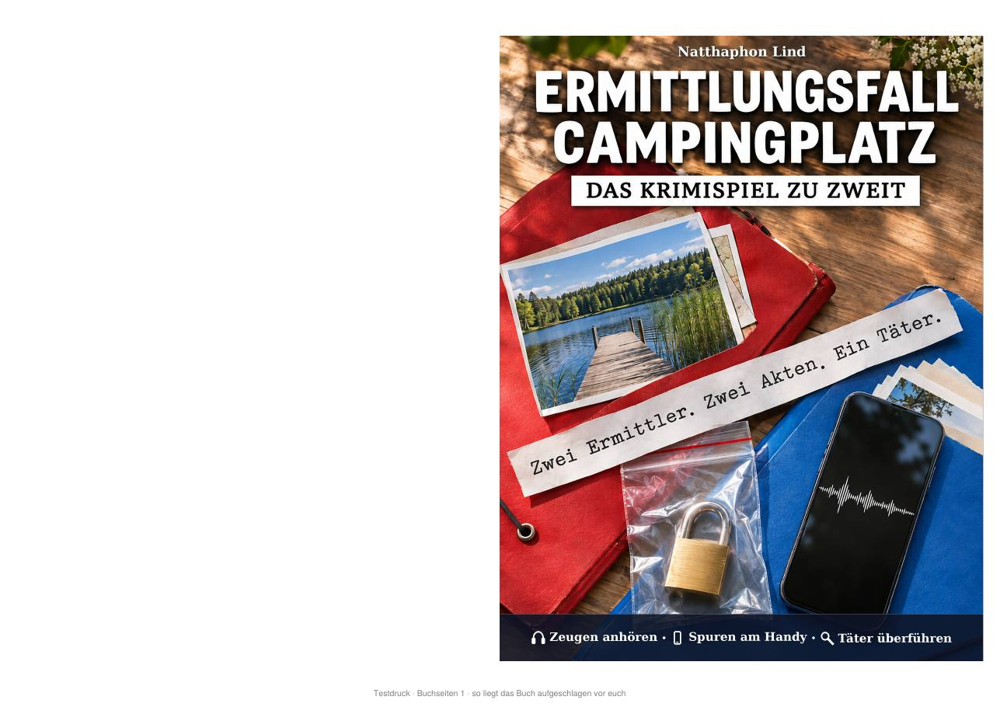

Demo · Akt 1 zu zweit
▶ Ablauf vorspielen
⏸ Pause
↺ Zurücksetzen
Tempo
normal
schnell
langsam
Sprachnachrichten abspielen
DEMO
Links das Handy von Akte Rot, rechts das von Akte Blau, in der Mitte das aufgeschlagene Buch. Tippt auf „Ablauf vorspielen“ – oder spielt selbst mit beiden Handys.
◆ HANDY AKTE ROT
Das Buch · Titel

● HANDY AKTE BLAU